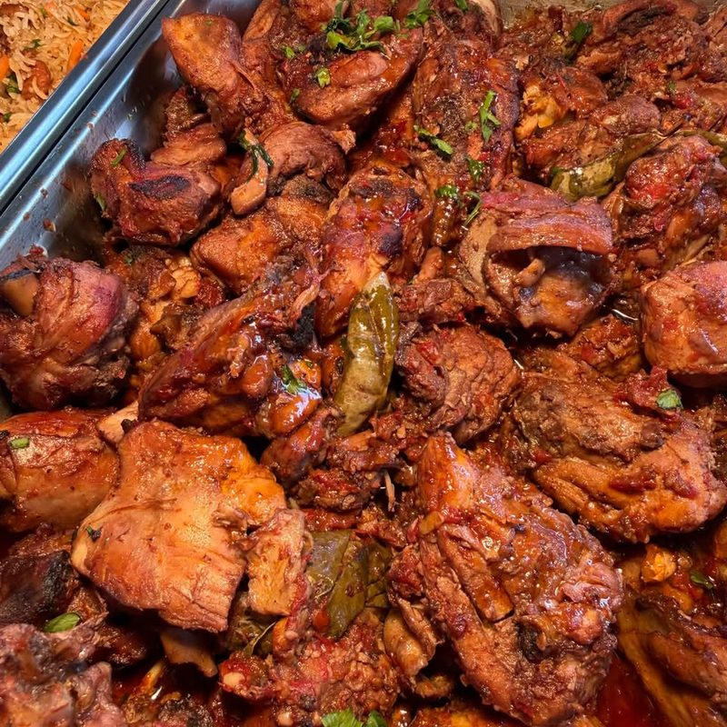

La table de mémé
Chaque jour, un menu fait maison
Au 19 ruelle des Œillets, le Snack propose des repas comme chez mémé, accompagnés de gâteaux faits maison. Le menu change au fil des jours et se dévoile sur la page Facebook de la maison.
Le Snack, c’est aussi une communauté de plus de 1 200 abonnés qui suivent le plat du jour.
